Guide Voti — Comprendre et utiliser
D2 · Guide de référence · 26 octobre 2026
Voti permet de participer à des choix ou sondages avec des Cartes Voti individuelles. Chaque personne choisit une réponse, puis confirme son vote. Les résultats s’ouvrent selon les règles du sondage.
On peut choisir une activité en famille, une sortie dans une classe ou un groupe, recueillir un avis dans une association ou un collectif, ou organiser une consultation dans une structure jeunesse. Aucun de ces contextes n’est nécessaire pour utiliser Voti.
Exemple fictif : La Cabane Voti. Cet Espace comprend les groupes Soleil et Lune, avec Soleil A/B/C et Lune A/B. Question : Quelle activité vendredi ? Réponses : Parc, Cinéma, Jeux. Les captures ne contiennent aucune donnée réelle et leurs QR sont inutilisables.
Trouver rapidement une action
- Découvrir Voti et son organisation
- Comprendre son rôle
- Créer, retrouver et parcourir un Espace
- Préparer les groupes
- Créer et modifier les membres
- Télécharger et gérer les Cartes Voti
- Créer un sondage
- Modifier et enregistrer
- Publier et partager
- Participer à un sondage
- Suivre les participations et fermer
- Comprendre les résultats
- Gérer les invitations et les accès
- Installer Voti sur son appareil
- Protéger les données et les fichiers
- Utiliser les actions avancées
- Trouver de l’aide
Les repères P01–P36 identifient les procédures, Cxx les captures et S1–S4 les schémas.
1. Découvrir Voti
P01 · Ouvrir et se repérer
Tous les rôles. Internet est nécessaire aux Espaces.
- Ouvrez Voti dans votre navigateur.
- Depuis Mes sondages, choisissez Espaces & groupes pour gérer un Espace, ou Présenter ma Carte Voti pour participer.
- Avec un accès de gestion enregistré, choisissez Mes Espaces → Ouvrir sur votre Espace.
Résultat : l’Espace s’ouvre avec vos permissions. Sans accès enregistré, créez un Espace ou importez l’accès reçu, au chapitre 3.
À savoir — Le Mode libre Le bouton Nouveau sondage de l’accueil général concerne le Mode libre. Pour créer dans un Espace, ouvrez cet Espace puis Sondages. Ce guide décrit ce parcours ; les accès et sauvegardes du Mode libre sont différents.
S1 — Comprendre l’organisation

Un Espace rassemble personnes et sondages. Une Carte appartient à un membre. Un membre peut appartenir à plusieurs groupes. Un sondage peut cibler ces groupes ou tout l’Espace ; viennent ensuite la participation et les résultats.
2. Comprendre son rôle
Un rôle Voti décrit ce que la personne peut faire dans l’application. Il ne dépend ni de son âge ni de son métier. Un Participant peut être enfant, adolescent ou adulte.
S3 — Trois rôles, trois permissions
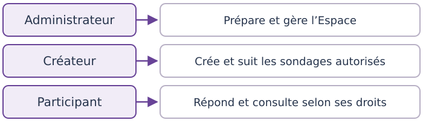
- Administrateur : gère l’Espace, les membres, les groupes, les Cartes et les accès. Il peut aussi créer et gérer les sondages.
- Créateur : crée et suit les sondages dans le périmètre qui lui est autorisé. Il ne reçoit pas automatiquement les droits de gestion des membres ou des accès.
- Participant : utilise sa Carte Voti pour répondre aux sondages auxquels il peut participer et consulter les résultats autorisés.
Ne confondez pas les accès : le fichier de gestion donne les droits Administrateur/Créateur ; la Carte permet de participer, sans administrer. Avec un accès Créateur, importez-le puis passez au chapitre 7. L’Administrateur prépare membres, groupes et Cartes. Avec une Carte seule, allez au chapitre 10.
3. Créer ou retrouver un Espace
P03 · Créer un Espace
Rôle obtenu : Administrateur. Prévoyez Internet et un endroit privé pour conserver l’accès.
- Dans Espaces & groupes, dépliez Créer un Espace.
- Saisissez Nom de l’Espace, puis Créer un Espace. Effectuez la vérification humaine si elle est demandée.
- Dans le nouvel Espace, conservez votre accès avec P05.
Résultat : l’Aperçu s’ouvre ; membres et sondages restent à préparer.
P04 · Importer un accès et retrouver son Espace
Administrateur ou Créateur, fichier d’accès valide reçu en privé.
- Ouvrez Espaces & groupes.
- Sous Importer un accès SECRET à un Espace, choisissez Choisir un fichier, puis votre fichier d’accès de gestion.
- Si un remplacement d’accès est proposé, vérifiez rôle et périmètre avant confirmation.
Résultat : l’accès vérifié ouvre l’Espace. Lors d’une prochaine visite, utilisez Mes Espaces → Ouvrir.
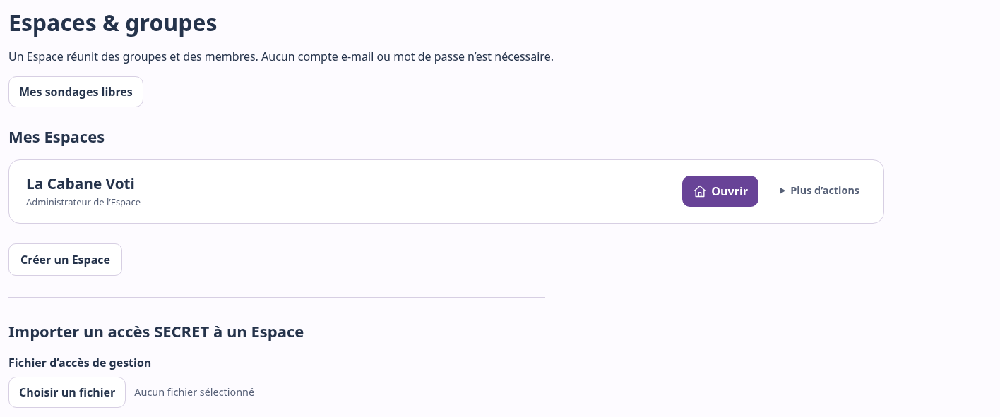
P05 · Conserver son accès de gestion
Administrateur ou Créateur, Espace accessible. Ouvrez Réglages → Exporter mon accès SECRET. Gardez le fichier dans un emplacement privé : il permettra l’import sur un autre appareil, mais ne sauvegarde pas toutes les données. Ne le distribuez pas aux Participants comme une Carte.
Parcourir l’Espace
Aperçu donne les repères ; Sondages rassemble les sondages. L’Administrateur accède aussi à Membres, Groupes, Invitations et Accès. Le Créateur voit les sections et groupes autorisés. Réglages permet d’exporter son accès.
4. Préparer les groupes
P09 · Créer un groupe
Administrateur, Espace actif.
- Ouvrez Groupes → Nouveau groupe.
- Saisissez le nom, par exemple « Soleil ».
- Choisissez une illustration si vous le souhaitez, puis Créer le groupe.
Résultat : le groupe apparaît dans la liste. Pour lui associer des membres, utilisez leurs fiches : il n’existe pas d’étape « ajouter un membre » depuis la fiche du groupe.
P10 · Modifier un groupe
Administrateur, groupe actif. Ouvrez Groupes → Gérer. Modifiez le nom ou Changer l’illustration, puis Enregistrer. Attendez la confirmation. Annuler restaure les valeurs enregistrées. Renommer ne change pas les affiliations.
P15 · Choisir Liste ou Vignettes
Dans une section accessible, choisissez Liste pour une vue compacte, ou Vignettes pour les illustrations. La préférence reste sur l’appareil, séparément pour Membres et Groupes. Les données et permissions ne changent pas.
5. Créer et modifier les membres
P12 · Créer un membre et sa Carte
Administrateur. Préparez d’abord les groupes utiles.
- Ouvrez Membres → Ajouter un membre.
- Saisissez le Nom ou pseudonyme du nouveau membre, par exemple « Soleil A ».
- Cochez ses groupes. Un membre peut en avoir plusieurs ou aucun.
- Choisissez éventuellement une illustration, puis Créer le membre et sa carte.
- Téléchargez la Carte qui apparaît, selon P16.
Résultat : le membre existe et sa Carte est déjà active. Aucune activation supplémentaire n’est nécessaire.
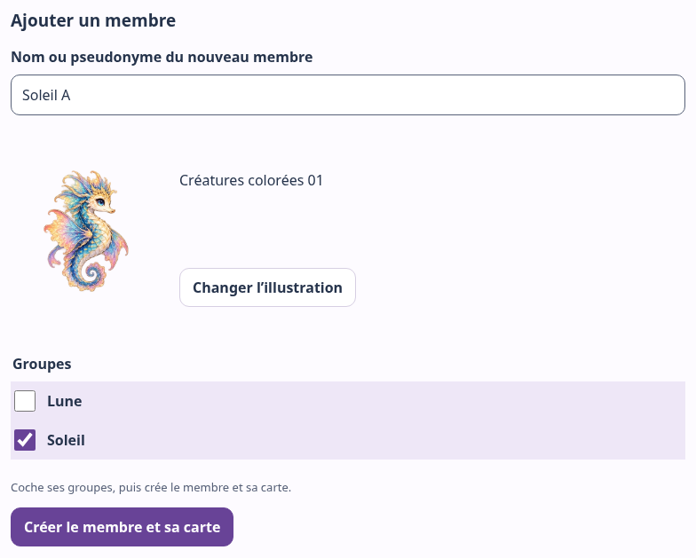
P13 · Modifier un membre ou ses groupes
Administrateur, membre actif.
- Dans Membres, choisissez Voir sur la bonne personne.
- Modifiez nom, illustration ou cases de groupes.
- Dans Modifications non enregistrées, choisissez Enregistrer et attendez la confirmation. Annuler restaure les valeurs précédentes.
La barre reste accessible pendant le défilement ; sur téléphone, elle est en bas. Les affiliations enregistrées servent aux prochains sondages : elles ne changent pas les personnes déjà retenues pour un sondage publié.
P14 · Choisir une illustration
Administrateur, création ou fiche modifiable.
- Choisissez Choisir une illustration ou Changer l’illustration.
- Pour un membre, filtrez si utile par Tous, Créatures, Enfants ou Adultes. Ce sont des catégories de dessins, pas des rôles.
- Sélectionnez une vignette et vérifiez l’aperçu ; les contrôles sont aussi utilisables au clavier. Sur téléphone, touchez la vignette.
- Choisissez Valider mon choix, puis enregistrez la fiche ou terminez la création.
Aucune illustration enlève le visuel. Voti propose uniquement les dessins intégrés : aucune photo personnelle n’est importable ici.
6. Télécharger et gérer les Cartes Voti
Une Carte Voti correspond à un membre et permet de participer en son nom. Son QR est un accès personnel : une personne qui en possède une copie peut l’utiliser. Ce n’est ni un accès de gestion, ni le QR d’un sondage.
P16 · Télécharger, imprimer et remettre une Carte
Administrateur, Carte encore disponible dans la session.
- Dans Carte Voti créée, vérifiez pseudonyme, Espace et groupes.
- Choisissez Voti Pop, Nature, Douceur, Nuit ou Minimal. Les options d’illustration et de fond sont graphiques, sans effet sur les droits.
- Choisissez Télécharger cette carte (PDF SECRET) et imprimez si nécessaire. Le QR entier doit rester net et non coupé.
- Remettez la Carte à son titulaire ; gardez les copies privées.

P17 · Retrouver le lot de cette session
Administrateur, au moins une Carte exportable dans l’onglet.
- Dans Membres, ouvrez Cartes disponibles dans cette session.
- Utilisez Voir les cartes ou PDF des … cartes. Choisissez thème et fond avant l’export.
- Après conservation des fichiers, Effacer de cette session oublie ce lot, après confirmation.
À savoir — Lot temporaire Naviguer dans l’Espace conserve le lot. Recharger ou fermer l’onglet le fait disparaître : téléchargez les PDF avant. Effacer la session ne révoque pas les exemplaires déjà téléchargés ou imprimés.
P18 · Créer ou remplacer plusieurs Cartes
Administrateur, membres actifs à sélectionner.
- Dans Membres, choisissez Gérer les cartes.
- Cochez uniquement les membres concernés, ou utilisez Tout sélectionner / Tout désélectionner. La sélection reste présente en passant de Liste à Vignettes.
- Choisissez Créer / remplacer … cartes et lisez la confirmation.
- Confirmez seulement après avoir vérifié les personnes et les remplacements annoncés.
- Lisez le bilan, puis téléchargez le PDF du nouveau lot.
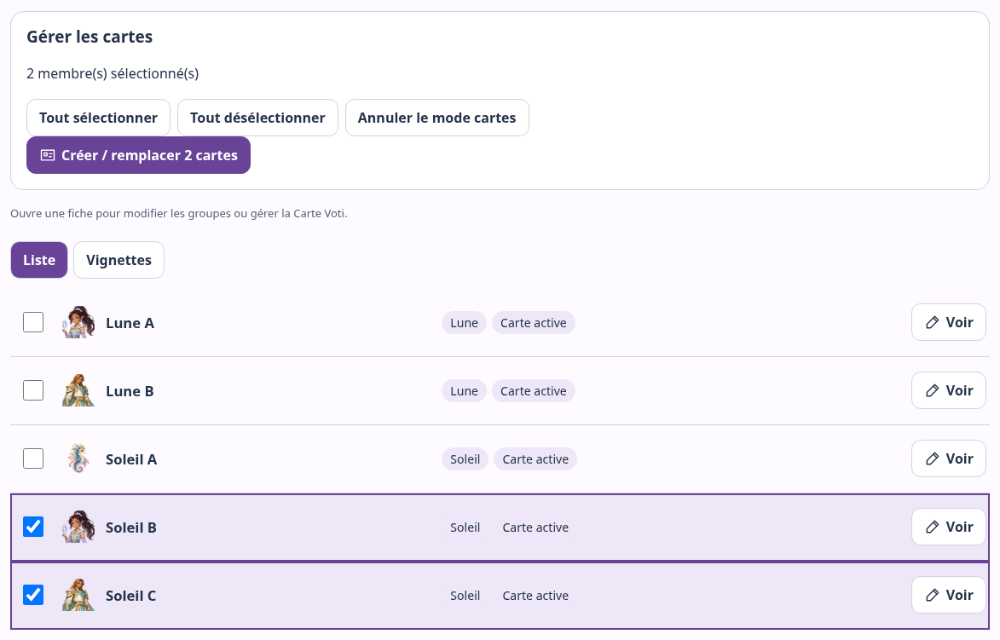
Attention — Les anciennes Cartes seront invalidées Pour chaque membre sélectionné, une nouvelle Carte est émise. S’il en avait déjà une, l’ancienne ne fonctionne plus. Les membres non sélectionnés ne changent pas. Cette opération n’est pas une simple réimpression.
Le PDF de ces … cartes contient le nouveau lot. Le PDF des … cartes contient l’ensemble disponible dans la session. Une nouvelle Carte s’ajoute au lot ; remplacer celle d’un membre remplace son ancienne entrée.
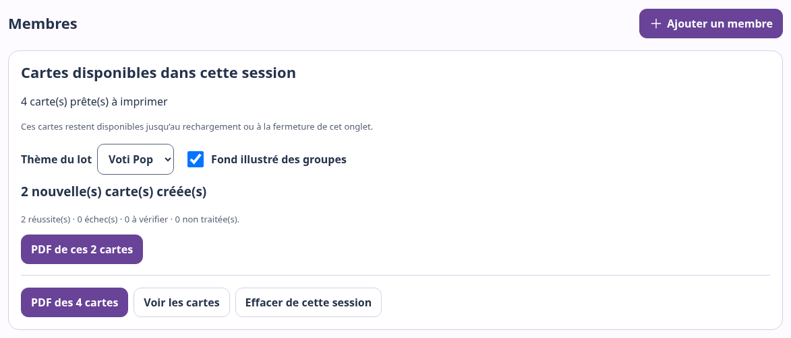
Si le lot est interrompu, conservez le PDF des réussites et lisez les nombres échecs, à vérifier et non traitées. Si Vérifier les cartes apparaît, utilisez-le avant de relancer une émission incertaine. N’en déduisez pas que toute la sélection a réussi, ni que toute l’opération a été annulée.
P19 · Remplacer ou révoquer une seule Carte
Administrateur, fiche du bon membre ouverte avec Voir. Regardez aussi dans Actions à utiliser avec précaution.
- Remplacer : choisissez Régénérer la carte, confirmez Régénérer, puis téléchargez la nouvelle Carte.
- Révoquer : choisissez Révoquer la carte, puis confirmez. Aucune nouvelle Carte n’est émise ; une régénération reste possible pour ce membre actif.
Attention — Trois actions différentes Remplacer invalide l’ancienne Carte et en fournit une nouvelle. Révoquer coupe son accès sans fournir de Carte. Réimprimer utilise un PDF conservé sans changer sa validité. Les votes passés restent ; aucun second vote n’est donné au membre.
Le serveur ne permet pas de reconstituer une Carte perdue. Sans PDF conservé ni lot temporaire, il faut la remplacer.
7. Créer un sondage dans l’Espace
Administrateur ou Créateur autorisé, membres et groupes prêts.
Ouvrez l’Espace puis Sondages → Nouveau sondage. Express, Guidée et Réglages avancés proposent le même fonctionnement avec un accompagnement différent. Aucune présentation n’est meilleure pour tout le monde. Toutes créent un brouillon, pas un vote ouvert.
P23 · Créer un brouillon Express
- Choisissez Création express.
- Saisissez la question « Quelle activité vendredi ? » et les réponses Parc, Cinéma, Jeux. Vous pouvez proposer de 2 à 6 réponses.
- Pour Qui peut participer ?, choisissez Certains groupes, puis Soleil. Vérifiez que 3 membres concernés est indiqué.
- Lisez les réglages recommandés, puis choisissez Créer le brouillon.
Résultat : la gestion du brouillon s’ouvre. Express propose un vote anonyme, sans commentaire, avec résultats pour les membres concernés après le minimum requis. Pour les trois membres de Soleil, la recommandation est 2. Vous pourrez ajuster les réglages sur cet écran de gestion, avant publication.
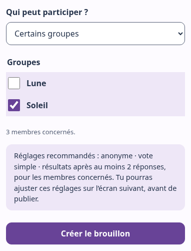
P24 · Créer un brouillon Guidé
Choisissez Création guidée, puis avancez avec Continuer :
- Ta question : saisissez « Quelle activité vendredi ? ».
- Tes réponses : saisissez Parc, Cinéma et Jeux ; ajoutez, retirez ou ordonnez les réponses si nécessaire.
- Qui peut participer ? : sélectionnez Certains groupes → Soleil ; vérifiez les trois membres concernés.
- Comment participer ? : choisissez Anonyme et Vote simple pour notre exemple.
- Quand montrer les résultats ? : choisissez Quand tout le monde a répondu ou que je ferme le sondage. Conservez le minimum 2 et les membres concernés comme personnes pouvant voir les résultats.
- Vérifie ton sondage : relisez le résumé. Les boutons Modifier ramènent au réglage correspondant. Choisissez ensuite Créer le brouillon.
Résultat : le brouillon est enregistré avec vos choix. Dans cet exemple Guidé, les résultats attendront tous les participants ou la fermeture, même avec deux votes. Il s’agit d’un sondage distinct de l’exemple Express.
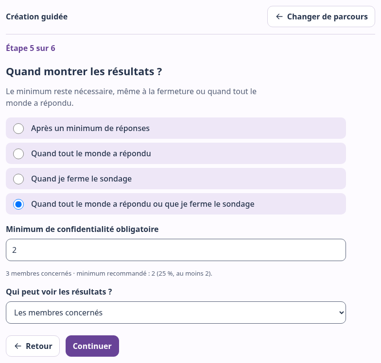
P25 · Utiliser Réglages avancés
Choisissez Réglages avancés. Renseignez question, réponses, audience, participation, commentaires et résultats ; relisez puis Créer le brouillon.
Visiter une autre présentation conserve les saisies. Soumettre en Express applique cependant ses réglages recommandés de participation et résultats. Pour garder vos choix détaillés, soumettez en Guidée/Avancé, ou ajustez le brouillon.
Comprendre le minimum recommandé
Voti propose 25 % des personnes pouvant participer, arrondi au supérieur, avec un minimum recommandé de 2.
| Personnes concernées | Minimum recommandé |
|---|---|
| 3 | 2 |
| 9 | 3 |
| 20 | 5 |
Un membre appartenant à plusieurs groupes sélectionnés ne compte qu’une fois. La proposition s’adapte à l’audience tant que vous ne l’avez pas personnalisée. Une valeur saisie manuellement est conservée quand les groupes changent. Utiliser la recommandation permet de revenir au calcul automatique. À la réouverture d’un brouillon, Voti préserve prudemment la valeur enregistrée.
À savoir — Minimum et résultats Le minimum est une recommandation ajustable avant publication. Une fois enregistré pour le sondage, il reste une condition de disponibilité des résultats. Il aide à protéger la confidentialité des petits résultats, mais l’atteindre ne suffit pas toujours : la règle choisie compte aussi.
Pour zéro ou une personne éligible, la recommandation reste 2. Cette audience ne peut donc pas l’atteindre, même après fermeture. Vérifiez les membres et les groupes avant publication ; Voti ne réduit pas automatiquement la recommandation à 1.
8. Modifier et enregistrer un sondage
P26 · Ajuster un sondage encore modifiable
Administrateur ou Créateur autorisé, brouillon ou sondage ouvert sans vote.
- Dans Sondages → Gérer, lisez l’état et le résumé, puis dépliez Modifier le sondage, fermé par défaut.
- Dans L’essentiel, ajustez question, description ou réponses. L’audience n’est modifiable que dans le brouillon.
- Dépliez Participation et résultats pour Affiner les réglages.
- Dans la barre des modifications, choisissez Enregistrer les règles. Attendez Modifications enregistrées.
Annuler restaure les valeurs enregistrées. Avant de partir sans sauvegarder, Voti propose de continuer l’édition ou d’abandonner. En cas d’erreur, gardez la saisie, vérifiez la connexion et réessayez ; attendez une confirmation de succès.
| État | Ce qui peut changer |
|---|---|
| Brouillon | Contenu, audience et réglages autorisés |
| Ouvert, aucun vote | Contenu et réglages autorisés ; personnes retenues à publication inchangées |
| Premier vote reçu | Question, réponses et règles verrouillées ; apparence distincte |
| Fermé | Plus de vote ni d’édition du fond ; apparence encore accessible |
9. Publier et partager
P27 · Publier pour les membres
Administrateur ou Créateur autorisé, brouillon vérifié.
- Ouvrez Gérer et relisez le résumé : question, réponses, groupes, participation, règle de résultats et minimum.
- Vérifiez que les bons membres sont actifs et dans les bons groupes.
- Choisissez Publier pour les membres.
Résultat : le sondage passe à Ouvert ; le suivi des participations apparaît. Créer ou enregistrer le brouillon n’avait pas encore ouvert le vote.
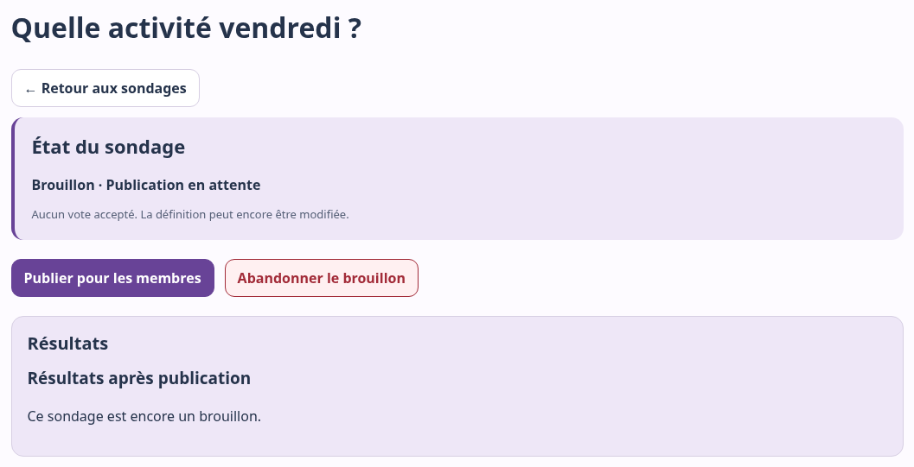
À savoir — Les personnes retenues au moment de la publication Voti fixe alors les membres pouvant participer. Modifier ensuite leurs groupes n’ajoute ni ne retire rétroactivement des personnes de cette audience. Publier fixe cette liste ; le premier vote verrouille ensuite le contenu et les règles.
P28 · Partager le bon accès au sondage
Administrateur ou Créateur autorisé, sondage publié.
- Choisissez QR & partager le sondage dans la gestion.
- Copiez le lien de vote ou téléchargez le QR. Les entrées Un QR pour chaque choix, QR résultats et Créer une affiche PDF répondent à d’autres besoins.
- Partagez le lien ou l’affiche avec les personnes concernées.
Le QR du sondage ouvre le parcours ; celui d’une réponse propose un choix à confirmer. Les Participants doivent encore présenter leur Carte. Ne partagez à leur place ni un accès de gestion ni une invitation.
10. Participer à un sondage
S2 — Du sondage au vote
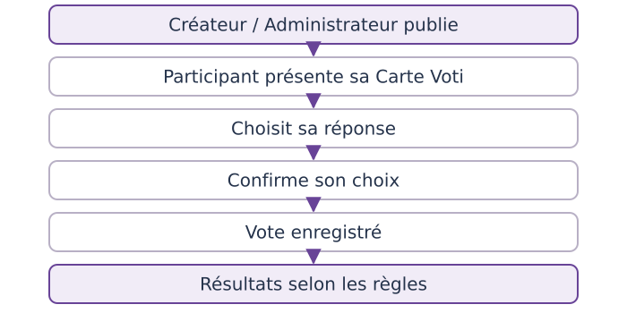
P29 · Présenter sa Carte, choisir et confirmer
Participant, Carte active, sondage ouvert et participation autorisée. Sur un appareil partagé, utilisez un profil sans accès de gestion enregistré.
- Ouvrez le lien ou le QR du sondage, puis Scanner ma Carte Voti. Autre entrée : accueil Présenter ma Carte Voti, puis Voter dans Mon espace.
- Choisissez Scanner avec la caméra, autorisez-la si demandé et présentez le QR entier. Choisir un fichier accepte aussi une photo de votre Carte ; gardez-la privée.
- Vérifiez Carte reconnue : …. Mauvais pseudo ? Ne confirmez pas ; quittez puis présentez votre propre Carte.
- Choisissez une réponse, puis Continuer.
- Vérifiez Tu choisis : …. Autre choix permet de revenir. Un commentaire facultatif peut être proposé selon le sondage.
- Choisissez Oui, je confirme. Attendez Merci ! Ton vote a bien été enregistré.
- Choisissez Accueil, ou Participant suivant sur un appareil partagé. Dans Mon espace ou les résultats, Terminer quitte la participation.


Résultat : le vote est enregistré et l’identité temporaire est oubliée au succès. Terminer met aussi fin à l’accès temporaire ; la Carte reste valable pour d’autres sondages. Un même membre ne peut pas voter deux fois à ce sondage, même après remplacement de sa Carte. Aucun vote n’est accepté après fermeture.
11. Suivre les participations et fermer
P31 · Lire le suivi
Administrateur ou Créateur autorisé. Dans Sondages → Gérer, le haut de page indique X participations sur Y. Y est le nombre de personnes retenues à publication, sans recalcul selon les groupes actuels.
Dans l’exemple Guidé, 2 participations sur 3 atteint le minimum, mais la règle attend la dernière participation ou la fermeture. En anonyme, aucune liste nominative de votants ou non-votants n’est disponible.
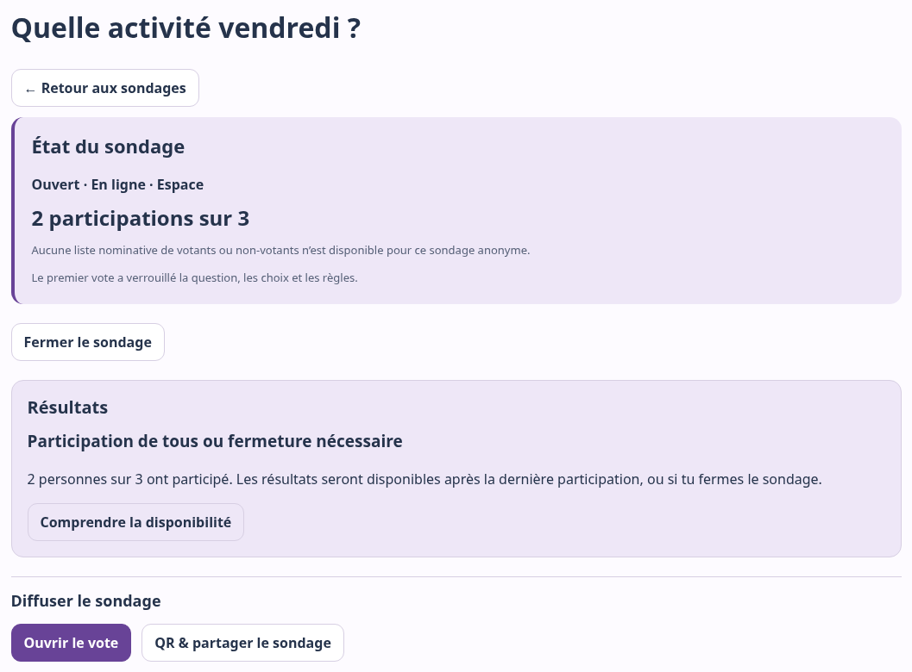
P32 · Fermer le sondage
Administrateur ou Créateur autorisé, sondage ouvert.
- Dans la gestion, choisissez Fermer le sondage.
- Lisez la confirmation, puis confirmez avec Fermer le sondage.
- Vérifiez l’état Fermé et la disponibilité des résultats.
Résultat : plus aucun vote n’est accepté. Les votes déjà reçus sont conservés. Fermer ne supprime pas le sondage et ne contourne jamais le minimum.
12. Comprendre et consulter les résultats
S4 — Pourquoi attendre les résultats ?
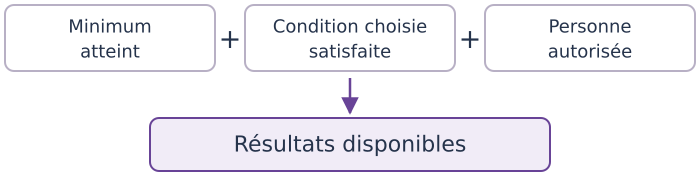
Si l’une des réponses est non, les résultats ne sont pas accessibles à cette personne. Il faut distinguer combien de votes, à quel moment et pour qui.
| Règle choisie | Condition, en plus du droit de consultation |
|---|---|
| À partir du minimum de participations | Le minimum enregistré est atteint |
| Quand tous les membres concernés ont participé | Tous ont participé et le minimum est atteint |
| Quand le sondage est fermé | Le sondage est fermé et le minimum est atteint |
| Quand tous ont participé, ou dès la fermeture | Tous ont participé ou le sondage est fermé ; le minimum reste nécessaire |
Le réglage Administration uniquement réserve la consultation aux personnes ayant les droits de gestion de ce sondage. Leurs droits ne leur permettent pas de contourner le minimum ni la règle choisie.
P30 · Lire les résultats
Gestion autorisée ; Participant si la consultation lui est ouverte.
- Dans la gestion, lisez Résultats et son motif. Choisissez Voir les résultats si disponibles, sinon Comprendre la disponibilité. Cliquer ne les débloque pas.
- Côté Participant, présentez votre Carte si nécessaire. Dans Mon espace, Résultats disponibles apparaît quand la consultation est permise.
- Lisez le total et la répartition ; terminez le parcours sur un appareil partagé.
Guidée : à 2/3, notre exemple attend. Après fermeture, le minimum étant atteint, les résultats s’ouvrent : Parc 1, Cinéma 1, Jeux 0. Le troisième membre peut les consulter s’il y est autorisé, mais ne peut plus voter. Express : la règle du minimum seul autorise ici les résultats dès deux votes, même pendant l’ouverture. Ce sont deux sondages distincts.
Anonyme ou identifié : que voit la gestion ?
- Anonyme : la gestion voit le nombre de participations, sans association directe entre un membre et sa réponse, ni liste nominative des votants/non-votants.
- Identifiée avec la Carte Voti : la gestion autorisée peut relier le membre à sa participation et à sa réponse. Les résultats destinés aux membres ne publient pas ces identités.
Annoncez ce choix avant de faire participer. Le mode anonyme de Voti ne promet pas un anonymat absolu sur le réseau ou l’infrastructure. Dans un petit groupe, le contexte ou un commentaire peut aussi permettre de reconnaître quelqu’un.
13. Invitations et accès de gestion
P21 · Créer ou fermer une invitation
Administrateur. Une invitation crée un nouveau membre et sa Carte, pas un accès de gestion.
- Ouvrez Invitations → Nouvelle invitation.
- Choisissez groupes, maximum d’utilisations et expiration.
- Vérifiez le récapitulatif, puis Créer une invitation et confirmez.
- Copiez le lien secret ou téléchargez le QR immédiatement. Il ne pourra plus être réaffiché après avoir quitté cet écran. Partagez-le seulement en privé.
Pour arrêter les inscriptions, ouvrez l’invitation et Fermer l’invitation. Cela ne supprime pas les membres déjà créés. Une invitation expirée ou épuisée ne permet plus de rejoindre l’Espace.
P22 · Rejoindre avec une invitation
Participant, invitation valide reçue en privé. Ouvrez son lien/QR, renseignez Ton nom ou pseudonyme, puis Créer ma Carte Voti. Téléchargez immédiatement la Carte ; Ouvrir Mon espace mène à la participation.
Résultat : un nouveau membre rejoint les groupes prévus. Pour retrouver un membre existant, utilisez sa Carte plutôt qu’une invitation : cela évite un doublon.
P06 · Déléguer un accès de gestion
Administrateur, groupes prêts si périmètre limité.
- Ouvrez Accès → Créer un accès ; choisissez Créateur ou Administrateur.
- Pour un Créateur, cochez les groupes autorisés. Aucun coché signifie tout l’Espace ; l’Administrateur a accès à tout l’Espace.
- Choisissez Créer un accès de gestion SECRET. Conservez le fichier téléchargé et transmettez-le en privé. La personne l’importe avec P04.
Résultat : elle reçoit les permissions choisies, pas seulement un droit de vote.
P07 · Révoquer un accès de gestion
Administrateur, accès concerné clairement identifié.
Dans Accès, ouvrez sa fiche, choisissez Révoquer cet accès, puis confirmez.
Attention — Retrait des droits de gestion Cet accès ne pourra plus gérer l’Espace. Cela ne supprime ni l’Espace ni ses sondages. Le dernier accès Administrateur est protégé contre la révocation. Vérifiez qu’un accès Administrateur utilisable reste disponible.
P08 · Retirer l’accès de cet appareil
Administrateur ou Créateur, fichier exporté et conservé ailleurs.
Dans Espaces & groupes → Mes Espaces → Plus d’actions, choisissez Retirer cet accès de cet appareil, puis confirmez Oublier cet accès. Cela oublie la copie locale et les Cartes temporaires de cet Espace, sans le supprimer ni révoquer l’accès côté serveur. Pour revenir, importez le fichier P04.
14. Installer Voti sur son appareil
P02 · Installer et lancer Voti
Tous les rôles, navigateur compatible et installation autorisée. Voti fonctionne dans le navigateur. Installer est facultatif : une icône ouvre le même Voti dans une fenêtre dédiée, sans store ni application Android native.
- Ouvrez Voti.
- Sur Android/Chrome, menu ⋮ → Installer l’application ou Ajouter à l’écran d’accueil. Sur Chromebook, utilisez l’installation dans la barre d’adresse ou le menu Chrome. Sur ordinateur, Chrome/Edge peuvent la proposer.
- Confirmez, puis lancez Voti depuis son icône.
Résultat : l’accueil s’ouvre dans une fenêtre dédiée. Si l’installation n’est pas proposée, gardez le navigateur. Les libellés varient ; un appareil géré peut nécessiter une autorisation.
Installer ne crée pas un compte, ne transfère pas les accès entre appareils, ne sauvegarde pas les Cartes et ne rend pas les Espaces utilisables hors connexion. Les mises à jour suivent le site Web. Pour retrouver la version publiée, rechargez ou fermez puis rouvrez l’application, hors vote ou modification en cours et après avoir téléchargé les Cartes temporaires utiles. Un lien reçu peut s’ouvrir dans le navigateur plutôt que la fenêtre installée.
15. Données, confidentialité et précautions
Utiliser des pseudonymes
Les données des Espaces sont enregistrées en ligne : noms/pseudos, groupes, illustrations choisies et sondages. Les réponses et éventuels commentaires sont conservés avec le sondage. Saisissez seulement ce qui est utile. Un pseudo n’est pas une identité vérifiée ; des doublons restent possibles.
Protéger les Cartes Voti
PDF, photos et impressions restent privés : une copie du QR permet d’utiliser la Carte. Ne l’envoyez pas dans une demande d’aide publique. En cas de perte ou copie, l’Administrateur peut la remplacer, pas récupérer son secret d’origine.
Protéger les accès de gestion
Le navigateur garde l’accès importé. Protégez appareil et fichiers ; évitez ce profil pour un appareil de vote partagé. Retirer cet accès de cet appareil oublie la copie locale ; Révoquer cet accès retire les droits côté serveur.
Comprendre le mode anonyme
Le compteur n’offre pas de lien direct nom/réponse. Un nom ou détail dans un commentaire peut pourtant identifier quelqu’un. Expliquez identité, commentaires et résultats avant le vote ; la fermeture ne change pas la confidentialité.
Supprimer, révoquer et archiver
Révoquer retire un accès sans effacer les votes antérieurs. Archiver arrête des usages actifs en conservant l’historique. Supprimer un sondage efface ses données en ligne, mais pas les PDF/impressions déjà distribués. Voir les actions ci-dessous.
Conserver les fichiers avec précaution
Accès de gestion, Cartes et résultats sont des fichiers distincts. L’export JSON général du Mode libre ne sauvegarde pas Espaces, accès, Cartes ou historique distant. Installer Voti n’est pas une sauvegarde.
Le brouillon distant d’Espace a une préparation limitée à 24 heures : ce n’est pas une archive. Un sondage publié/fermé n’expire pas automatiquement ; fermer ne l’efface pas. Les personnes responsables de l’Espace décident de la conservation des données et copies selon leur usage. Ce guide ne fixe pas une durée universelle et ne promet pas l’effacement de toutes les sauvegardes de l’hébergeur.
16. Actions avancées
P33 · Participation identifiée et commentaires
Administrateur ou Créateur autorisé, avant verrouillage pour les réglages. Dans la création ou Modifier le sondage → Participation et résultats, choisissez Anonyme ou Identifiée avec la Carte Voti, puis Vote simple ou Vote + commentaire facultatif. Enregistrez avant de faire voter.
Les commentaires Privés restent en gestion ; Approuvés avec les résultats permet de publier les commentaires approuvés lorsque les résultats sont disponibles. Le commentaire reste facultatif. Évitez les informations personnelles.
Dans la gestion publiée, ouvrez Commentaires ou Participations & commentaires :
- Lisez les entrées. Pour un commentaire publiable, Afficher approuve, Masquer retire de l’affichage. Un commentaire privé n’est pas publiable.
- Supprimer demande confirmation : seul le commentaire est supprimé, pas le vote. Son texte n’est pas éditable.
La gestion peut lire les commentaires avant le minimum sans ouvrir les résultats à tous. En identifié, Suivi des participants filtre aussi ceux qui ont participé ou restent à relancer ; cette liste n’existe pas en anonyme.
P34 · Apparence, affiche et export des résultats
Administrateur ou Créateur autorisé.
- Apparence du sondage : ouvrez le bloc dans la gestion, choisissez puis Enregistrer l’apparence. Le contenu verrouillé ne change pas.
- Affiche : QR & partager le sondage → Créer une affiche PDF ouvre le Studio. Préparez et vérifiez l’aperçu avant export/impression.
- Résultats disponibles : ouvrez Télécharger les résultats en PDF ; choisissez synthèse ou rapport et les options proposées, puis exportez.
Les commentaires publiés peuvent être inclus sur option. Les identités sont réservées à la gestion identifiée, sur choix explicite désactivé par défaut. Vérifiez les destinataires : un rapport nominatif n’est ni une synthèse sans identité ni un PDF de Cartes secrètes.
P11 · Archiver un groupe
Administrateur, fiche d’un groupe actif.
Ouvrez Groupes → Gérer → Actions à utiliser avec précaution, choisissez Archiver le groupe, puis confirmez. Voti refuse l’archivage si des sondages actifs le bloquent. Les membres et l’historique ne sont pas supprimés ; ce groupe ne sert plus aux usages actifs comme auparavant.
P20 · Révoquer un membre
Administrateur, fiche du membre concerné.
Ouvrez Membres → Voir → Actions à utiliser avec précaution, choisissez Révoquer le membre, puis confirmez.
Attention — Retrait de la participation du membre Sa Carte est invalidée et il ne peut plus participer. Son historique, ses votes antérieurs et les personnes retenues pour les sondages publiés sont conservés. Ce n’est pas une suppression complète de ses données.
P35 · Abandonner ou supprimer un sondage
Administrateur ou Créateur autorisé, bon sondage vérifié.
- Brouillon : dans la gestion, choisissez Abandonner le brouillon, puis confirmez Abandonner. Le sondage non publié est supprimé.
- Publié ou fermé : dépliez Suppression du sondage. Choisissez Supprimer en ligne, ou Supprimer partout pour retirer aussi le design de cet appareil. Lisez et confirmez l’action choisie.
Attention — Suppression du sondage Le sondage, ses votes, commentaires et liens de participation associés sont supprimés en ligne. Cette action est irréversible dans l’interface. Les PDF et impressions déjà diffusés ne sont pas retirés. « Partout » ne signifie pas effacer à distance les fichiers des autres personnes.
P36 · Renommer ou archiver un Espace
Administrateur.
Pour corriger le nom, ouvrez Réglages, modifiez Nom de l’Espace, puis Renommer l’Espace.
Pour arrêter ses usages actifs, dépliez Actions à utiliser avec précaution, choisissez Archiver l’Espace, puis confirmez.
Attention — Archivage de l’Espace Les Cartes et les accès Créateur sont désactivés ; l’Administrateur peut encore consulter l’historique. Ce n’est pas une suppression totale. Cette version ne propose pas de réactivation dans l’interface : n’archivez pas pour faire une pause.
17. Retrouver de l’aide
Commencez par relever l’écran, le message affiché et votre rôle. Contactez la personne responsable de votre Espace ou le support Voti s’il vous a été communiqué. N’envoyez pas de Carte, de lien secret ou de fichier d’accès sur un canal public.
| Situation | Première action utile |
|---|---|
| Mes Espaces est vide sur un nouvel appareil | Importer le fichier d’accès de gestion, P04 ; installer Voti ne le transfère pas |
| Le fichier d’accès est perdu, mais l’Espace s’ouvre encore | Exporter l’accès depuis Réglages, P05 |
| Le pseudo reconnu n’est pas le bon | Ne pas confirmer ; quitter puis présenter la bonne Carte, P29 |
| Le sondage n’apparaît pas pour un membre | Vérifier publication et personnes retenues ; changer de groupe après publication ne suffit pas |
| Résultats indisponibles | Lire le motif ; distinguer minimum, règle et personnes autorisées, P30 |
| La saisie n’est pas enregistrée | Utiliser la barre Enregistrer et attendre la confirmation, P26/P13 |
| Le lot de Cartes a disparu après rechargement | Retrouver un PDF conservé ou remplacer les Cartes nécessaires, P17/P19 |
| Installation absente | Continuer dans le navigateur, P02 |
Limites de récupération : il n’existe pas de récupération automatique par courriel. Si tous les accès de gestion sont perdus, une procédure d’intervention extérieure n’est pas définie dans l’application. Ne recréez pas un Espace en pensant retrouver ses données. Une Carte peut être remplacée, mais pas reconstituée depuis son secret serveur ; un Espace archivé n’a pas de restauration documentée par l’interface.